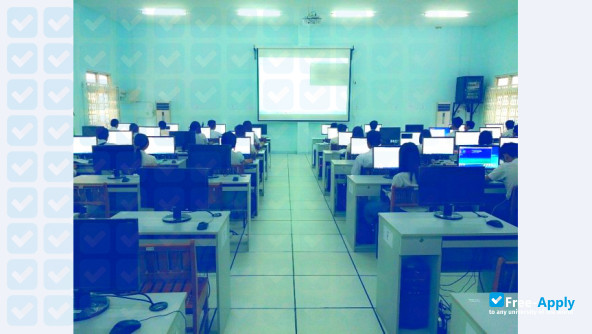
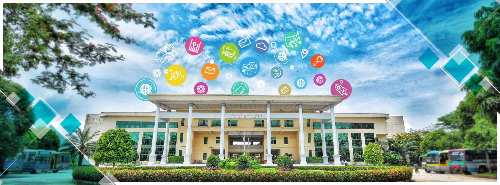

About University of Computer Studies, Yangon
ရန်ကုန်တိုင်းဒေသကြီး၊ ရွှေပြည်သာမြို့နယ်၊ အမှတ်(၄) လမ်းမကြီးပေါ်တွင် တည်ရှိပါသည်။
ရန်ကုန်ကွန်ပျူတာတက္ကသိုလ်သည် မြန်မာနိုင်ငံ၏ သတင်းအချက်အလက်နည်းပညာနှင့် ကွန်ပျူတာသိပ္ပံနယ်ပယ်တွင် ရှေ့တန်းမှ ဦးဆောင်နေသော အစိုးရတက္ကသိုလ်တစ်ခု ဖြစ်ပါသည်။ ရန်ကုန်ကွန်ပျူတာတက္ကသိုလ်ကို ကွန်ပျူတာသိပ္ပံနှင့် နည်းပညာဆိုင်ရာ အဆင့်မြင့်ပညာရပ်များ သင်ကြားပေးရန်၊ တိုင်းပြည်အတွက် လိုအပ်သော နည်းပညာကျွမ်းကျင်ပညာရှင်များ မွေးထုတ်ပေးရန်နှင့် နည်းပညာဆိုင်ရာ သုတေသနလုပ်ငန်းများကို အထောက်အကူပြုနိုင်ရန်အတွက် ရည်ရွယ်၍ တည်ထောင်ခဲ့ခြင်း ဖြစ်သည်။
ရန်ကုန်ကွန်ပျူတာတက္ကသိုလ်၏ သမိုင်းကြောင်းသည် ၁၉၇၁ ခုနှစ်တွင် ရန်ကုန်တက္ကသိုလ်၊ လှိုင်နယ်မြေ၌ တည်ထောင်ခဲ့သော "တက္ကသိုလ်များ ကွန်ပျူတာဌာန" (Universities' Computer Center - UCC) မှ စတင်မြစ်ဖျားခံခဲ့ပါသည်။ အစောပိုင်းကာလများတွင် US၊ UK နှင့် ဥရောပနိုင်ငံများမှ ပညာရှင်များ၏ ကူညီမှုဖြင့် နည်းပညာသင်တန်းများနှင့် ဒီပလိုမာသင်တန်းများကို စတင်သင်ကြားပေးခဲ့ပါသည်။ ထိုနောက် ၁၉၈၈ ခုနှစ် မတ်လတွင် "ကွန်ပျူတာသိပ္ပံနှင့် နည်းပညာတက္ကသိုလ်" (Institute of Computer Science and Technology - ICST) အဖြစ် သီးခြား အဆင့်မြှင့်တင်ဖွဲစည်းခဲ့ပြီး ၁၉၉၈ ခုနှစ် ဇူလိုင်လ ၁ ရက်နေ့တွင် "ရန်ကုန်ကွန်ပျူတာတက္ကသိုလ်" (University of Computer Studies, Yangon - UCSY) ဟု အမည်ပြောင်းလဲပြင်ဆင်ဖွဲစည်းခဲ့ပါသည်။
ရန်ကုန်ကွန်ပျူတာတက္ကသိုလ်တွင် သင်ကြားရေးဘာသာစကားအဖြစ် အင်္ဂလိပ်ဘာသာစကားကို အဓိကအသုံးပြုပြီး ကွန်ပျူတာစနစ်နှင့် နည်းပညာ၊ ကွန်ပျူတာသိပ္ပံ၊ သတင်းအချက်အလက်သိပ္ပံ စသည့် အဓိကမဟာဌာနကြီးများအောက်တွင် ဘာသာရပ်ဆိုင်ရာ အထူးပြုသင်တန်းများကို စနစ်တကျ သင်ကြားပေးလျက်ရှိပါသည်။ ထိုအပြင် ကျောင်းသား/သူများအနေဖြင့် ခေတ်မီနည်းပညာများကို လက်တွေ့လေ့လာနိုင်ရန်အတွက် AI Lab၊ Cyber Security Lab၊ Cloud Computing Lab နှင့် NLP Lab စသည့် သုတေသနဓာတ်ခွဲခန်းများကိုလည်း သီးသန့်ဖွဲစည်းထားရှိပါသည်။
ရန်ကုန်ကွန်ပျူတာတက္ကသိုလ်သည် နိုင်ငံတကာတက္ကသိုလ်များ၊ သုတေသနအဖွဲအစည်းများနှင့် ပညာရေးဆိုင်ရာ ပူးပေါင်းဆောင်ရွက်လျက်ရှိပြီး SOI Asia အဖွဲဝင် တက္ကသိုလ်တစ်ခုအဖြစ်လည်း ပါဝင်ဆောင်ရွက်လျက်ရှိပါသည်။ တက္ကသိုလ်မှ မွေးထုတ်ပေးလိုက်သော ဘွဲရပညာရှင်များသည် လက်ရှိတွင် အစိုးရဌာနများနှင့် ပြည်တွင်းပြည်ပ နည်းပညာကဏ္ဍ အသီးသီး၌ အရေးပါသော ဦးဆောင်နေရာများတွင် တာဝန်ထမ်းဆောင်လျက်ရှိပါသည်။
Degree Programs
ပေးအပ်သည့် ဘွဲ့များနှင့် သင်တန်းများ
ကျောင်းသားများ၏ အရည်အချင်းနှင့် လုပ်ငန်းခွင်လိုအပ်ချက်အပေါ် မူတည်၍ သင်တန်းအမျိုးအစား စုံလင်စွာ ဖွင့်လှစ်ပေးထားပါသည်။
ရန်ကုန်ကွန်ပျူတာတက္ကသိုလ်တွင် ကွန်ပျူတာသိပ္ပံ၊ သတင်းအချက်အလက်နည်းပညာနှင့် စနစ်များအတွက် ဘွဲကြို၊ မဟာဘွဲ၊ ဒီပလိုမာနှင့် ဒေါက်တာဘွဲ အဆင့်များကို သင်ကြားပေးလျက်ရှိပါသည်။ အဆိုပါ ဘွဲများအတွက် သင်တန်းများကို အောက်ပါအတိုင်း ဖွင့်လှစ်ပေးထားပါသည်-
Undergraduate Programs
- Bachelor of Computer Science (B.C.Sc. - Knowledge Engineering)
- Bachelor of Computer Science (B.C.Sc. - Knowledge Engineering)
- Bachelor of Computer Science (B.C.Sc. - Business Information Systems)
- Bachelor of Computer Science (B.C.Sc. - High Performance Computing)
- Bachelor of Computer Technology (B.C.Tech. - Embedded Systems)
- Bachelor of Computer Technology (B.C.Tech. - Computer Communication and Networks)
- Master of Computer Science (M.C.Sc.)
- Master of Computer Technology (M.C.Tech.)
- Master of Applied Science (M.A.Sc.)
- Master of Information Science (M.I.Sc.)
- Doctor of Philosophy (Ph.D. in Computer Science & Information Technology)
Postgraduate Programs
Post-Graduate Diploma in Computer Application
Club & Activities
ကျောင်းတွင်း event၊ activity တွေအနေနဲ့ Fresher Welcome, Dinner, ထမနဲထိုးပွဲ, ဝတ်ရွတ်ပွဲ နှင့် မိုးရာသီ အားကစားပွဲတွေ ရှိပါသည်
Music Club, Dance Club, Football Club, Basketball Club,Badminton Club, eSport Club, နှင့် Photo Club တွေလိုမျိုး Club တွေရှိလို ကိုယ်ဝါသနာပါရာမှာ ပါဝင်နိုင်ပါသည်။
MCPA Day အခမ်းအနားပွဲများ၊ Carreer Fair/ Job Fairများ၊ Project showများကိုလည်း နှစ်စဉ်ကျင်းပလေ့ရှိပါသည်။
Opportunities
UCSY က မြန်မာနိုင်ငံ၏ COE ကျောင်းတစ်ခုဖြစ်ပြီး နိုင်ငံတကာအဆင့်မီ Credit System ကို ကျင့်သုံးနေပြီး နိုင်ငံတကာ Project ပြိုင်ပွဲတွေ၊ Schlorship အခွင့်အလမ်းတွေအများကြီးရရှိနိုင်သော ကျောင်းတစ်ကျောင်းဖြစ်ပါသည်။
ရန်ကုန်ကွန်ပျူတာတက္ကသိုလ်သည် သင်ရိုးညွှန်းတမ်း စာတွေ့သင်ကြားမှုများအပြင် ကျောင်းသား/သူများ၏ အနာဂတ် နည်းပညာလုပ်ငန်းခွင်နှင့် ပညာရေးတိုးတက်မှုများအတွက် အောက်ပါ အခွင့်အလမ်းများကို ဖန်တီးပေးလျက်ရှိပါသည်-
- နိုင်ငံတကာ ပညာသင်ဆုနှင့် လဲလှယ်ရေးအစီအစဉ်များ (International Scholarships & Exchange Programs): SOI Asia၊ AUN/SEED-Net နှင့် Japan, Korea, ASEAN နိုင်ငံများရှိ မိတ်ဖက်တက္ကသိုလ်များနှင့် ပူးပေါင်း၍ Exchange Programs များ၊ Short-term Training များနှင့် မဟာဘွဲ/ဒေါက်တာဘွဲ ပညာသင်ဆု (Scholarship) လျှောက်ထားနိုင်သည့် အခွင့်အလမ်းများ။
- သုတေသနပြုလုပ်နိုင်မှုနှင့် Research Labs များ (Research Opportunities): Artificial Intelligence (AI)၊ Cyber Security၊ Cloud Computing၊ Natural Language Processing (NLP) စသည့် ခေတ်မီ Research Lab တွင် ပါမောက္ခ၊ ဆရာ/မများနှင့်အတူ သုတေသန စီမံကိန်းများ လက်တွေ့ ပါဝင်လုပ်ဆောင်နိုင်ခြင်း။
- လုပ်ငန်းခွင်အကြို လေ့ကျင့်ရေးအစီအစဉ်များ (Internships & Career Opportunities): ပြည်တွင်း/ပြည်ပ နည်းပညာကုမ္ပဏီကြီးများနှင့် ချိတ်ဆက်၍ Internships (အလုပ်သင်) ဆင်းနိုင်ခြင်း၊ တက္ကသိုလ်မှ ကျင်းပသော Job Fair များမှတစ်ဆင့် ဘွဲမရမီကတည်းက အလုပ်အကိုင် အခွင့်အလမ်းများ ရရှိနိုင်ခြင်း။
- နည်းပညာပြိုင်ပွဲများနှင့် Hackathon များ (Competitions & Hackathons): ACM-ICPC စကားရည်လု ပြိုင်ပွဲများ၊ National/Regional Hackathon များ၊ ICT ပြိုင်ပွဲများနှင့် Innovation Contests များတွင် ပါဝင်ယှဉ်ပြိုင်ခွင့်။
- ်းသားအသင်းအဖွဲများနှင့် ကလပ်များ (Clubs & Societies): UCSY Music Club၊ Art & Photography Club၊ Sports Clubs၊ Developer Student Clubs (DSC) နှင့် IT Associations များမှတစ်ဆင့် ခေါင်းဆောင်မှုအရည်အချင်းနှင့် Soft Skills များကို မြှင့်တင်နိုင်ခြင်း။
p
Nothing
Qualification
တက္ကသိုလ်ဝင်တန်းစာမေးပွဲတွင် စုစုပေါင်းအမှတ် (၄၅၀) နှင့်အထက်ရရှိသူများ သို့မဟုတ် အင်္ဂလိပ် နှင့် သင်္ချာ နှစ်ဘာသာပေါင်း (၁၄၀)နှင့်အထက်ရရှိသူများ လျှောက်ထားနိုင်ပါသည်။ စုစုပေါင်းအမှတ် အများအနည်းအလိုက် ရွေးချယ်သွားမည်။
တက္ကသိုလ်ဝင်တန်းစာမေးပွဲတွင် မြန်မာတစ်နိုင်ငံလုံးရှိ စာစစ်ဌာနများမှ သင်္ချာ၊ ဓာတု၊ ရူပ ပါဝင်သည့် ဘာသာတွဲတစ်ခုခုဖြင့် အောင်မြင်ထားသူဖြစ်ရမည်။
2024 နှင့် 2025ခုနှစ်၏ နောက်ဆုံးဖြတ်မှတ်မျာ
၂၀၂၄ ခုနှစ်တွင် စုစုပေါင်းအမှတ် (၃၇၅)အနည်းဆုံးဖြတ်မှတ်ဖြစ်သည်။ ၂၀၂၅ခုနစ်တွင် စုစုပေါင်းအမှတ် (၃၉၆) အနည်းဆုံးဖြတ်မှတ်ဖြစ်သည်။ (အင်္ဂလိပ်နှင့် သင်္ချာ နှစ်ဘာသာပေါင်းကိုပါ ထည့်သွင်းဆုံးဖြတ်ခြင်းဖြစ်ပါသည်။)
ဘယ်လိုလူတွေ တက်ရောက်သင့်သလဲ
UCSYသည် တက္ကသိုလ်ဝင်တန်း အောင်မြင်ပြီး ကွန်ပျူတာသိပ္ပံဘွဲ့၊ သတင်းအချက်အလက်နည်းပညာနှင့် software engineerဘာသာရပ်ကိုစိတ်ဝင်စားသော ကျောင်းသားကျောင်းသူများအတွက် အထူးသင့်တော်သော တက္ကသိုလ် တစ်ခုဖြစ်ပါသည်။
တက္ကသိုလ်အကြောင်း ပိုမိုသိရှိလိုပါက: